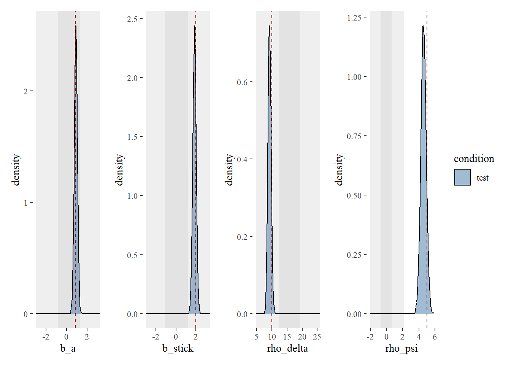
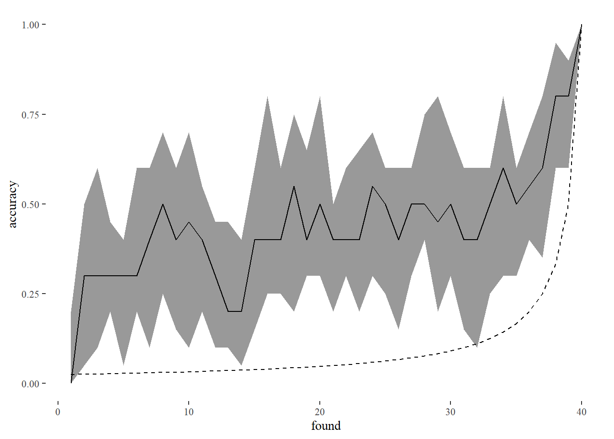
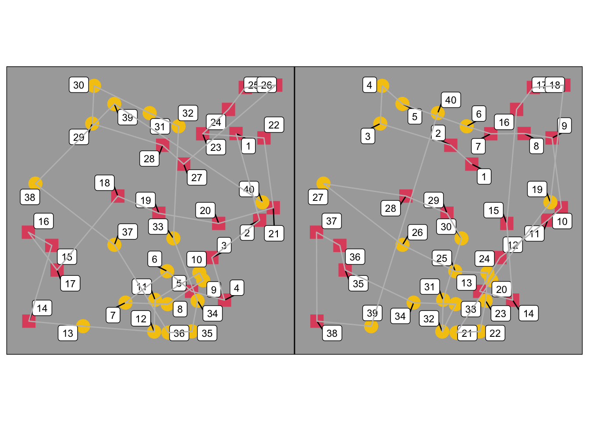
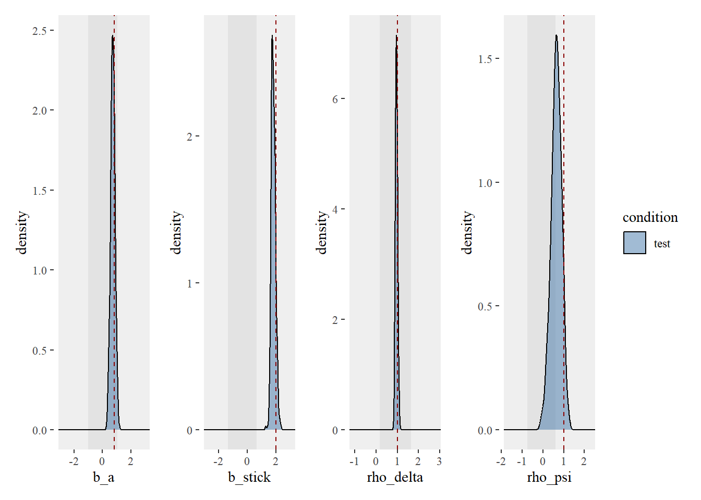
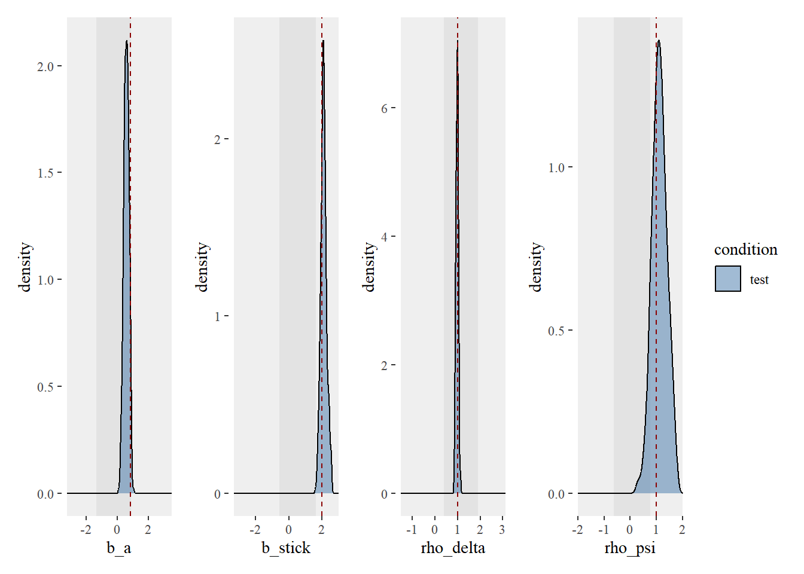
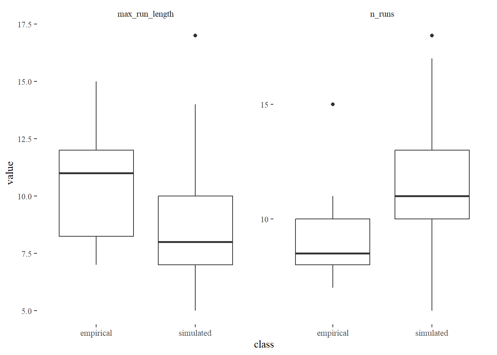
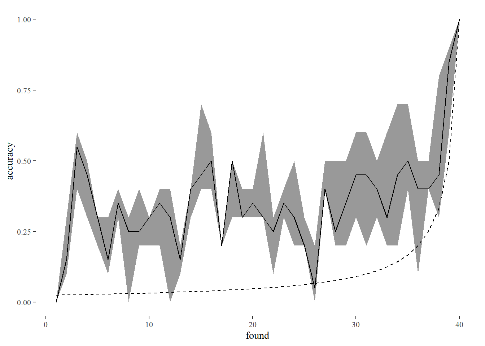

library(tidyverse)
library(cmdstanr)
library(loo)
source("../../functions/import_data.R")
source("../../functions/prep_data.R")
source("../../functions/compute_summary_stats.R")
source("../../functions/plot_model.R")
source("../../functions/plot_data.R")
source("../../functions/post_functions.R")
source("../../functions/sim_foraging_data.R")
options(mc.cores = 4)
# set global ggplot theme
theme_set(ggthemes::theme_tufte())Testing simple models
Fitting Model to Simulated Data
- Model 1.0: the original model first detailed in Clarke et al (2022), reimplemented in new code. The only other edit is to correctly calculate absolute proximity (we previously scaled before calculating inter-item distances, which led to expansion of vertical distances compared to the horizontal in cases where foraging stimuli were arranged on a rectangular grid - this minor edit makes little difference to the overall fit of the model).
- Model 1.1: the same as model 1.0 except it uses relative proximity - for each item selection, we divide all inter-target distances by the distance to the closest item. The idea behind this is that it may allow the model’s proximity weighting to cope better towards the end of a trial when the items are sparser.
- Model 1.2: the same as 1.1 except it has no parameter for relative direction.
Model 1.0
First simulate some data
Our first simple simulation will involve 2 target classes, each with 20 items on screen. We will simulate one of the targets to be preferred over the other (item_class_weights), a small stick bias (b_stick), moderate proximity bias (rho_delta) and a fairly strong fowards momentum (rho_psi).
Absolute direction tuning is only used from model XX onwards: in this simulation, we are adding in a stronger bias for horizontal compared to vertical directions (is this true??)
This simple simulation only considers one participant, doing 10 trials of one condition.
n_trials_per_cond <- 10
n_item_class <- 2
n_item_per_class <- 20
item_class_weights = c(0.7, 0.3, 0, 0)
b_stick = 2
b_memory = 0
abs_dir_tuning = list(kappa = rep(20, 4), theta = c(2, 0.5, 1, 0.5))
rho_delta = 10
rho_psi = 5
d1 <- sim_foraging_multiple_trials(person = 1,
condition = "test",
n_item_class = n_item_class, n_item_per_class = n_item_per_class,
item_class_weights = item_class_weights, item_labels = item_labels,
b_stick = b_stick,
rho_delta = rho_delta,
rho_psi = rho_psi,
abs_dir_tuning = abs_dir_tuning,
b_memory = b_memory,
inital_sel_params = inital_sel_params,
init_sel_lambda = init_sel_lambda)Fitting model 1.0
Here, we fit model version 1.0.
d1_list <- prep_data_for_stan(d1$found, d1$stim, c("spatial", "item_class"))
d1_list <- add_priors_to_d_list(d1_list, modelver = "1.0")
d1_list$n_trials_to_sim <- 1iter = 100
mod <- cmdstan_model("../../models/simple/FoMo1_0.stan")
# run model
m_simple_1_0 <- mod$sample(data = d1_list,
chains = 4, parallel_chains = 4, threads = 4,
refresh = 0,
iter_warmup = iter, iter_sampling = iter,
sig_figs = 3)
m_simple_1_0$save_object("scratch/simple_1_0_tmp.rds")Extract posterior
We can then extract posterior samples.
# read in model
m_simple_1_0 <- readRDS("scratch/simple_1_0_tmp.rds")
# extract post
post <- extract_post(m_simple_1_0, d1, multi_level = FALSE)Plot model
We plot the fixed effects of the model (and can confirm that we are able to recover the parameters we put into the simulation).
# plot model
plot_model_fixed(post, gt = list(b_a = qlogis(item_class_weights[1]),
b_stick = b_stick,
rho_delta = rho_delta,
rho_psi = rho_psi))
Check predictions
We can assess model accuracy i.e. how well can it predict the next target chosen?
pred <- summarise_postpred(m_simple_1_0, d1, multi_level = FALSE)
plot_model_accuracy(pred)`summarise()` has grouped output by 'found'. You can override using the
`.groups` argument.
Plot comparison between a real and a simulated trial
And we can plot a comparison between a real and a simulated trial in order to visually inspect for obvious differences in the way the model is foraging compared to the simulated data.
[Plotting simulated trial not currently working - need to check Q].
# plot comparison between a real and simulated trial
pltreal <- plot_a_trial(d1$stim, d1$found, 1)
pltsim <- plot_a_trial(d1$stim, pred$sim , trial = 1)
pltreal + pltsim
Compare Run Statistics
get_run_info_over_trials(d1$found) %>% knitr::kable()| person | trial | condition | n_found | max_run_length | n_runs |
|---|---|---|---|---|---|
| 1 | 1 | test | 40 | 11 | 8 |
| 1 | 2 | test | 40 | 7 | 10 |
| 1 | 3 | test | 40 | 9 | 11 |
| 1 | 4 | test | 40 | 8 | 9 |
| 1 | 5 | test | 40 | 5 | 12 |
| 1 | 6 | test | 40 | 7 | 14 |
| 1 | 7 | test | 40 | 14 | 8 |
| 1 | 8 | test | 40 | 9 | 10 |
| 1 | 9 | test | 40 | 8 | 11 |
| 1 | 10 | test | 40 | 10 | 10 |
get_run_info_over_trials(pred$sim) %>% knitr::kable()| person | trial | condition | n_found | max_run_length | n_runs |
|---|---|---|---|---|---|
| 1 | 10_NA | test | 40 | 20 | 2 |
| 1 | 1_262 | test | 40 | 10 | 7 |
| 1 | 1_325 | test | 40 | 7 | 10 |
| 1 | 1_356 | test | 40 | 10 | 6 |
| 1 | 1_51 | test | 40 | 13 | 7 |
| 1 | 2_NA | test | 40 | 20 | 2 |
| 1 | 3_NA | test | 40 | 20 | 2 |
| 1 | 4_NA | test | 40 | 20 | 2 |
| 1 | 5_NA | test | 40 | 20 | 2 |
| 1 | 6_NA | test | 40 | 20 | 2 |
| 1 | 7_NA | test | 40 | 20 | 2 |
| 1 | 8_NA | test | 40 | 20 | 2 |
| 1 | 9_NA | test | 40 | 20 | 2 |
Model 1.1
Simulating data with relative proximity set up
n_trials_per_cond <- 10
n_item_class <- 2
n_item_per_class <- 20
item_class_weights = c(0.7, 0.3, 0, 0)
b_stick = 2
b_memory = 0
abs_dir_tuning = list(kappa = rep(20, 4), theta = c(2, 0.5, 1, 0.5))
rho_delta = 1
rho_psi = 1
dr <- sim_foraging_multiple_trials(person = 1,
condition = "test",
n_item_class = n_item_class, n_item_per_class = n_item_per_class,
item_class_weights = item_class_weights, item_labels = item_labels,
b_stick = b_stick,
rho_delta = rho_delta,
rho_psi = rho_psi,
abs_dir_tuning = abs_dir_tuning,
b_memory = b_memory,
inital_sel_params = inital_sel_params,
init_sel_lambda = init_sel_lambda,
rel_proximity = TRUE)iter = 100
mod <- cmdstan_model("../../models/simple/FoMo1_1.stan")
dr_list <- prep_data_for_stan(dr$found, dr$stim, c("spatial", "item_class"))
dr_list <- add_priors_to_d_list(dr_list, modelver = "1.1")
dr_list$n_trials_to_sim <- 1
# run model
m_simple_1_1 <- mod$sample(data = dr_list,
chains = 4, parallel_chains = 4, threads = 4,
refresh = 0,
iter_warmup = iter, iter_sampling = iter,
sig_figs = 3)
m_simple_1_1$save_object("scratch/simple_1_1_tmp.rds")# read in model
m_simple_1_1 <- readRDS("scratch/simple_1_1_tmp.rds")
# extract post
post <- extract_post(m_simple_1_1, dr, multi_level = FALSE)# plot model
plot_model_fixed(post, gt = list(b_a = qlogis(item_class_weights[1]),
b_stick = b_stick,
rho_delta = rho_delta,
rho_psi = rho_psi))
pred <- summarise_postpred(m_simple_1_1, dr, multi_level = FALSE, get_sim = TRUE)
plot_model_accuracy(pred)`summarise()` has grouped output by 'found'. You can override using the
`.groups` argument.
Model 1.2
We will use the dr dataset.
mod <- cmdstan_model("../../models/simple/FoMo1_2.stan")
m_simple_1_2 <- mod$sample(data = dr_list,
chains = 4, parallel_chains = 4, threads = 4,
refresh = 0,
iter_warmup = iter, iter_sampling = iter,
sig_figs = 3)
m_simple_1_2$save_object("scratch/simple_1_2_tmp.rds")Extract posterior
We can then extract posterior samples.
# read in model
m_simple_1_2 <- readRDS("scratch/simple_1_2_tmp.rds")
# extract post
post <- extract_post(m_simple_1_2, dr, multi_level = FALSE)Plot model
We plot the fixed effects of the model (and can confirm that we are able to recover the parameters we put into the simulation).
# plot model
plot_model_fixed(post, gt = list(b_a = qlogis(item_class_weights[1]),
b_stick = b_stick,
rho_delta = rho_delta))
Check predictions
We can assess model accuracy i.e. how well can it predict the next target chosen?
pred <- summarise_postpred(m_simple_1_2, dr, multi_level = FALSE)
plot_model_accuracy(pred)`summarise()` has grouped output by 'found'. You can override using the
`.groups` argument.
Model comparison
We will use the dr dataset. Trials 1-5 will be used as the training dataset.
Our data was generated using relative proximity and relative direction, so we expect model 1.1 to do the best job (and we see this when we use loo_compare).
# model 1.0
df_train <- dr$found %>%
filter(trial < 6)
ds_train <- dr$stim %>%
filter(trial < 6)
d_train_list <- prep_data_for_stan(df_train, ds_train, c("spatial", "item_class"))
d_train_list <- add_priors_to_d_list(d_train_list, modelver = "1.0")
d_train_list$n_trials_to_sim <- 1
iter = 100
mod <- cmdstan_model("../../models/simple/FoMo1_0.stan")
# run model
m_train_1_0 <- mod$sample(data = d_train_list,
chains = 4, parallel_chains = 4, threads = 4,
refresh = 0,
iter_warmup = iter, iter_sampling = iter,
sig_figs = 3)
df_test <- dr$found %>%
filter(trial > 5) %>%
group_by(trial) %>%
mutate(trial = cur_group_id()) %>%
ungroup()
ds_test <- dr$stim %>%
filter(trial > 5) %>%
group_by(trial) %>%
mutate(trial = cur_group_id()) %>%
ungroup()
d_test_list <- prep_data_for_stan(df_test, ds_test, model_components = c("spatial", "item_class"))
d_test_list <- add_priors_to_d_list(d_test_list, modelver = "1.0")
d_test_list$n_trials_to_sim <- 1
gen_test <- mod$generate_quantities(m_train_1_0, data = d_test_list, seed = 123)
log_pd_kfold <- gen_test$draws("log_lik", format = "matrix")
elpd_kfold_1_0 <- elpd(log_pd_kfold)
## model 1.1
d_train_list <- add_priors_to_d_list(d_train_list, modelver = "1.1")
mod <- cmdstan_model("../../models/simple/FoMo1_1.stan")
# run model
m_train_1_1 <- mod$sample(data = d_train_list,
chains = 4, parallel_chains = 4, threads = 4,
refresh = 0,
iter_warmup = iter, iter_sampling = iter,
sig_figs = 3)
d_test_list <- add_priors_to_d_list(d_test_list, modelver = "1.1")
gen_test <- mod$generate_quantities(m_train_1_1, data = d_test_list, seed = 123)
log_pd_kfold <- gen_test$draws("log_lik", format = "matrix")
elpd_kfold_1_1 <- elpd(log_pd_kfold)
## model 1.2
mod <- cmdstan_model("../../models/simple/FoMo1_2.stan")
m_train_1_2 <- mod$sample(data = d_train_list,
chains = 4, parallel_chains = 4, threads = 4,
refresh = 0,
iter_warmup = iter, iter_sampling = iter,
sig_figs = 3)
gen_test <- mod$generate_quantities(m_train_1_2, data = d_test_list, seed = 123)
log_pd_kfold <- gen_test$draws("log_lik", format = "matrix")
elpd_kfold_1_2 <- elpd(log_pd_kfold)loo_compare(elpd_kfold_1_0, elpd_kfold_1_1, elpd_kfold_1_2) elpd_diff se_diff
model2 0.0 0.0
model3 -2.8 1.9
model1 -35.9 9.1